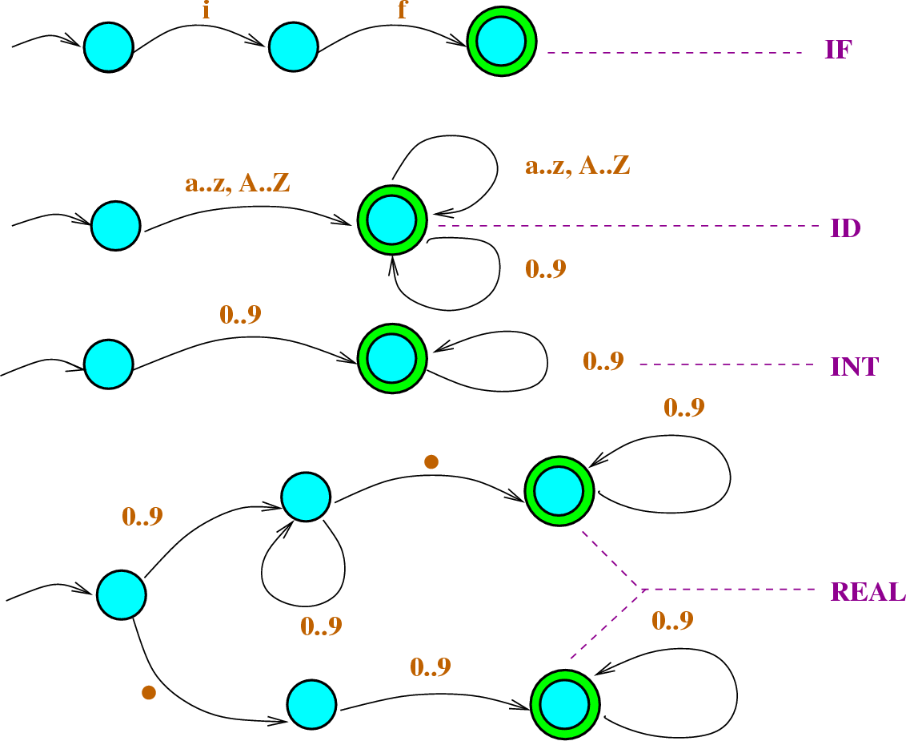

Introduction to Deterministic finite automata
DETERMINISTIC
FINITE AUTOMATA
DFA refers to deterministic finite automata. Deterministic refers to the uniqueness of the computation. The finite automata are called deterministic finite automata if the machine is read an input string one symbol at a time.
In DFA, there is only one path for specific input from the current state to the next state.
DFA does not accept the null move, i.e., the DFA cannot change state without any input character.
DFA can contain multiple final states. It is used in Lexical Analysis in Compiler.
